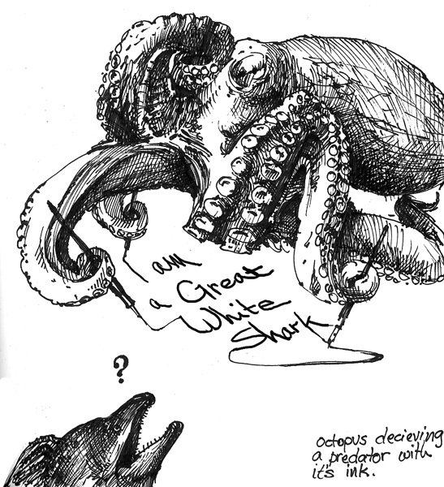
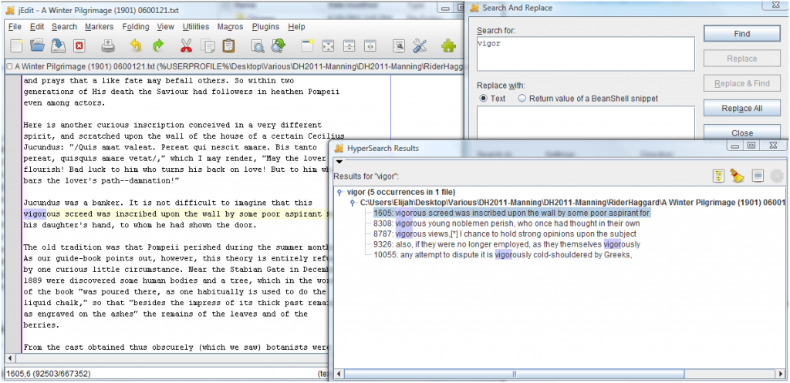
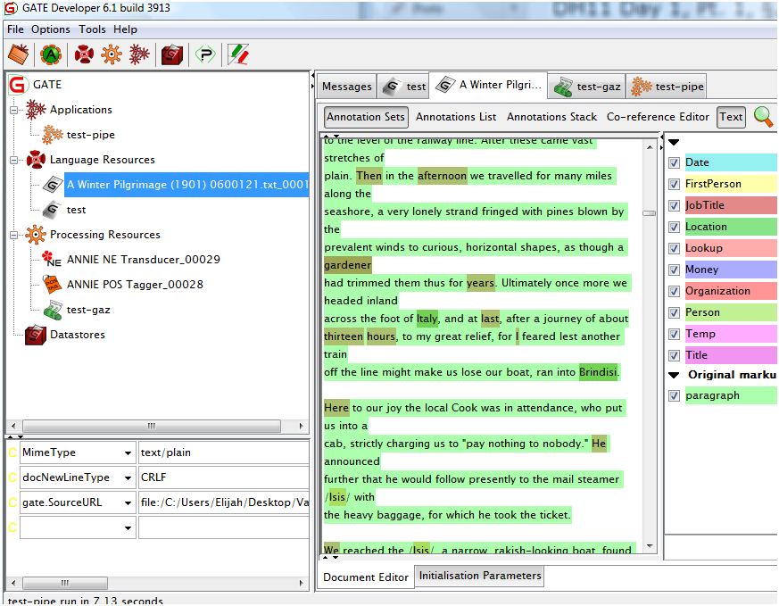

Much of the workshop is necessarily utilitarian, and the most important takeaway early on is the focus on the importance of data preparation and how it requires much more time and energy than the actual computational processing. But even the “mungy hacking” and the enormous time spent getting all the data into a “consistent and clean enough” form to work with disappears when all one looks at are the visualizations that make up the output.
To add another barrier to quickly integrating NLP into your humanities scholarship, until tools like the Google App Engine change things, you still need to get the documents on a local machine to work with them, which constrains research and limits possible targets of NLP to the few well-marked up XML versions of texts such as those found on Early English Books Online, digitized material typically only available to “partner” institutions such as that found at The Electronic Enlightenment (in use in Stanford’s Mapping the Republic of Letters Project) or the not-so-well-marked up, sometimes unicode but free and available Project Gutenberg. And if that wasn’t enough to dissuade you, most NLP tools are command-line and API and not web-accessible or GUI’d:
Really, there’s a lot of stuff that becomes much more doable and accessible when you know how to program things… If you’re going to get a long way by yourself, you’ll need to know how to program or script… Often, you want the 90% solution: automating nothing would be slow and painful, but automating everything is more trouble than it’s worth for a one-off process.
Much of what is thought of as NLP is based off of word counts. These methods, and collocations, are the traditional tools of corpus analysis and deal with presenting “dominant” words (in the case of Wordle) or phrases–even topic models have “fancy math” inside them but are still just counting words. The Google Books Ngram Viewer is also based on word counts but Manning echos Dan Cohen’s sentiment that the viewer serves as a great Digital Humanities gateway drug.
Importantly, and accessibly, the workshop reinforced the view that a lot of the natural language processing a humanities scholar would want to start with (while perhaps not interesting to a computational linguist pursuing new research in the field) can be done with a good text editor, like JEdit.


JEdit displaying occurences of "vigor" in the works of H. Rider Haggard
Natural language processing (which refers to natural languages as opposed to computer languages) has three primary frameworks: GATE (with a Java-based with a GUI), UIMA (useful for experienced programmers and directed toward free text as unstructured data) and NLTK (a large collection of Python APIs with no GUI or command-line functionality–a scripting language). NLTK mirrors R in that NLTK is a scripting language for NLP whereas R is a scripting language for statistics. There is also OpenNLP, Stanford NLP, Ling Pipe and more. Notably, many tools are oriented toward American English and trained on early 90s news stories and “degrade significantly” when used in other situations.
In traditional NLP you were creating rule-based systems to parse texts, but the last 20 years the shift has been toward statistical and machine-learning based tools. In certain cases, the availability of traditional rules-based NLP will afford a scholar with a more controlled and more comprehensible use of the tool, though the results are considered of lower quality than statistical machine-learning based NLP.
Another tool demonstrated during the workshop was GATE, which contains rule-based NLP in the ANNIE package but can also accept the inclusion of modules such as Stanford NLP’s part-of-speech tagger.


GATE NLP Toolkit
GATE allows you to build a corpus and bring to bear various standard and custom NLP modules to examine that corpus. But Manning cautions that the activity that needs to go into the training of the parsers, the processing of the texts and the selection of the tool for distilling the corpus exert an enormous influence on the output, and it is not simply the particular algorithm being run as a black box. However, that expert usage doesn’t mean getting a PhD in computational linguistics, but more involves things like taking the time and effort to train the models and especially analyzing error levels and, rather than attempting to achieve “perfect” results (Manning states that error rates of less than 10% is the typical standard), openly stating the process and explicitly describing the models used and the results from which claims are made.
There was much, much more involved, including demonstrations of coreference systems, Manning’s own part-of-speech tagger and the Stanford CoreNLP toolkit, which is another of many good places to start.